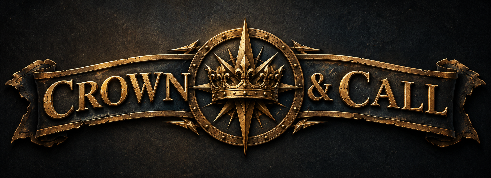

The world is broken. Darkness is real. The King is calling.
Crown & Call is a single-die tabletop roleplaying game. There are no classes and no prescribed paths. You face danger, wield weapons and Callings, and live with the wound that lands now — not a pile of hit points later.
The rules stay small so the table can ask the question that matters: why did you do it? A secular group can sit down for the adventure. A church group can use the same game as a doorway into harder talk. The game does not preach. It provides the table.
Gather your companions. Take up your calling. The Crown awaits.